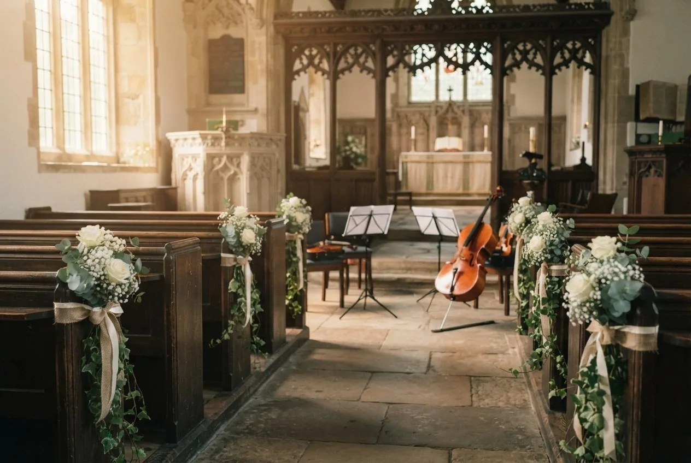
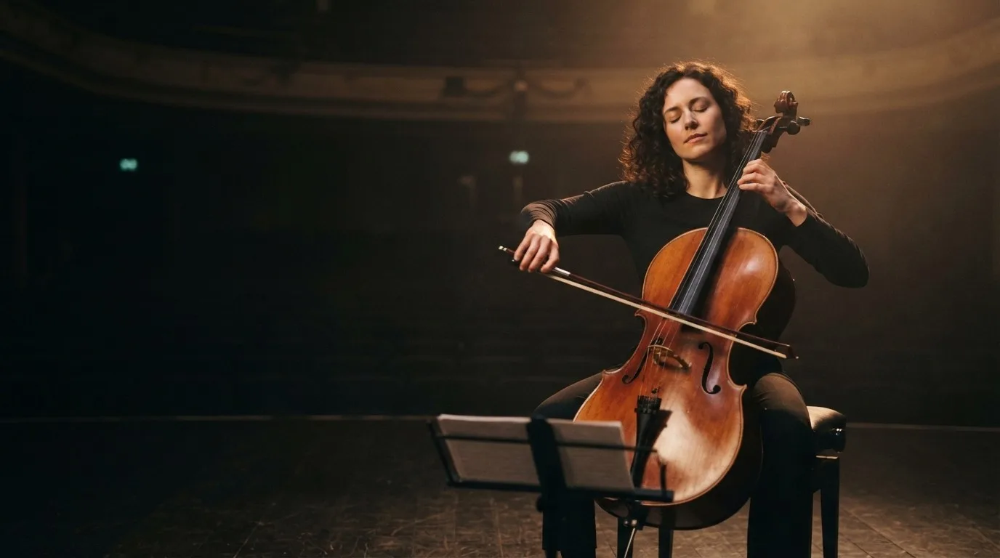
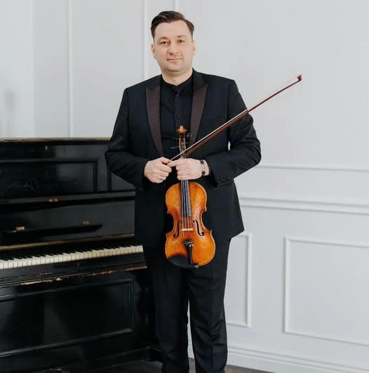
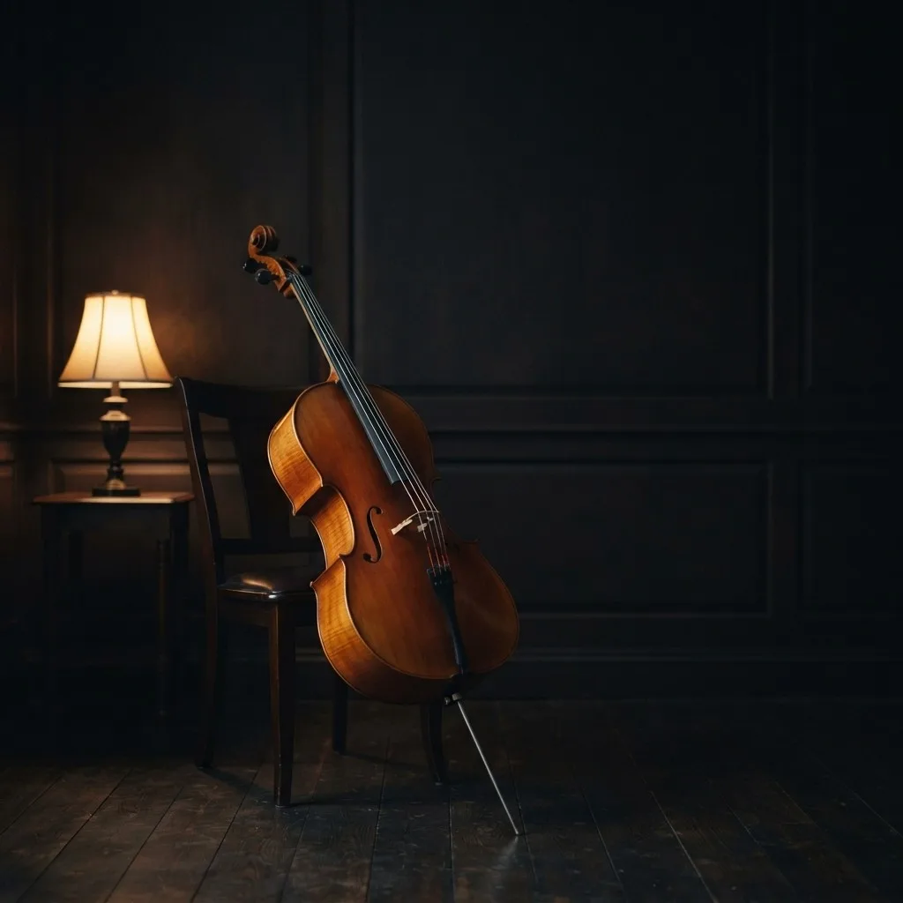
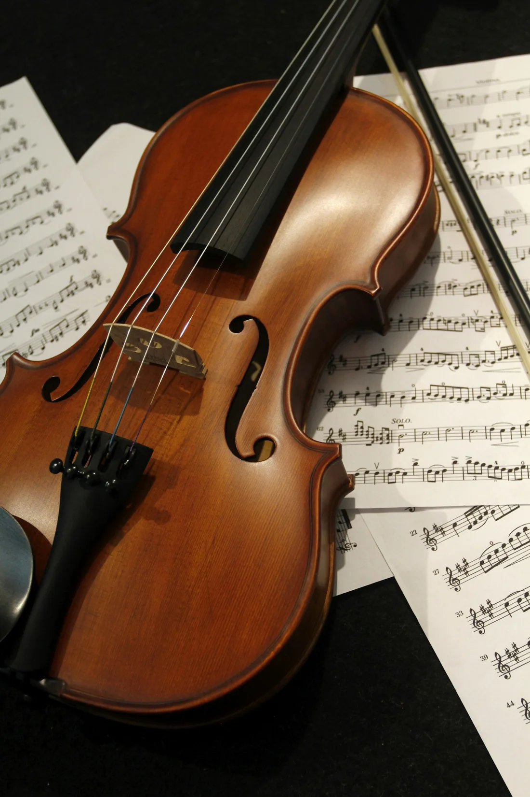
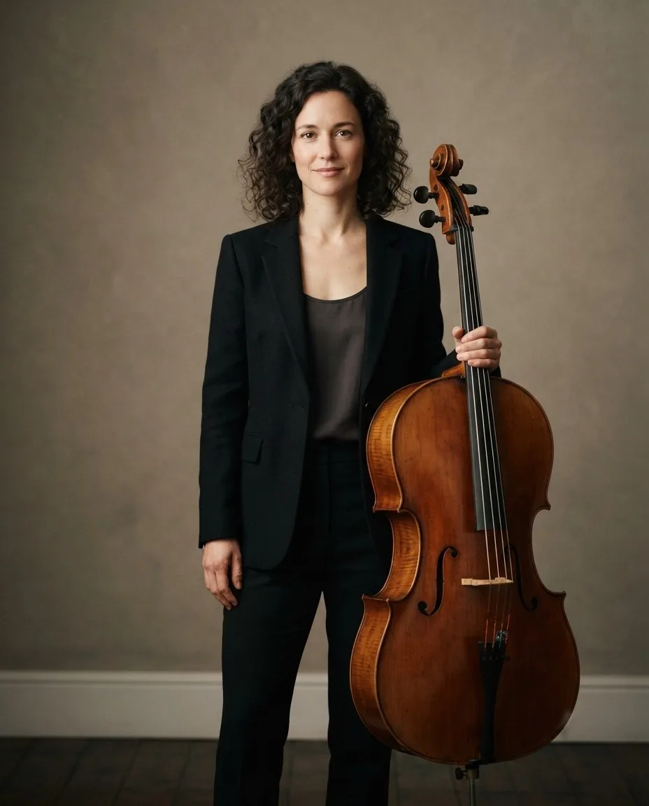
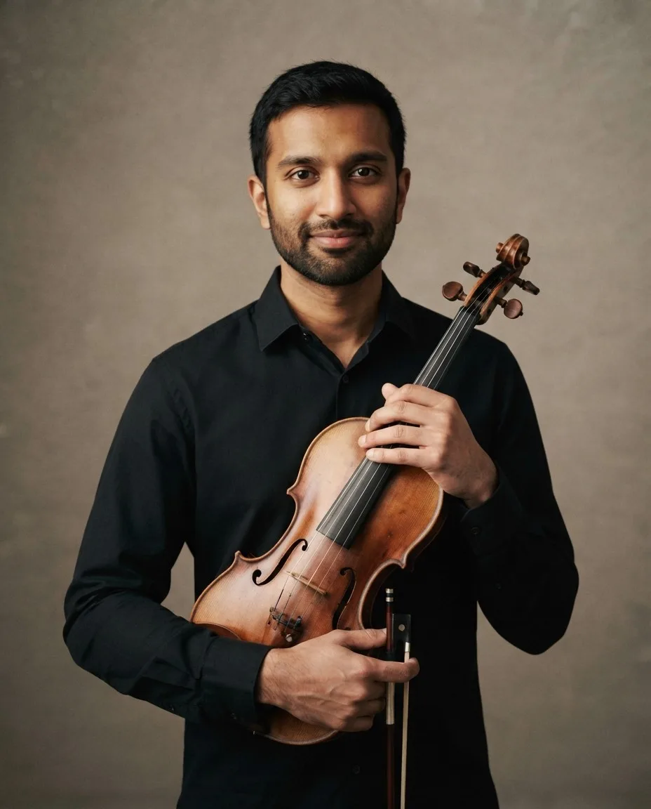
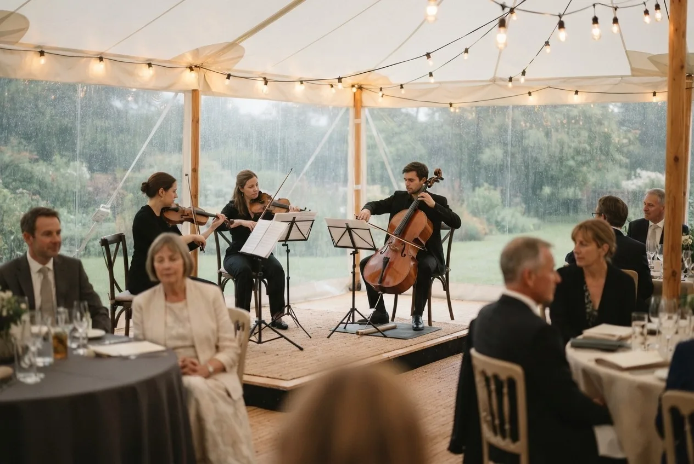
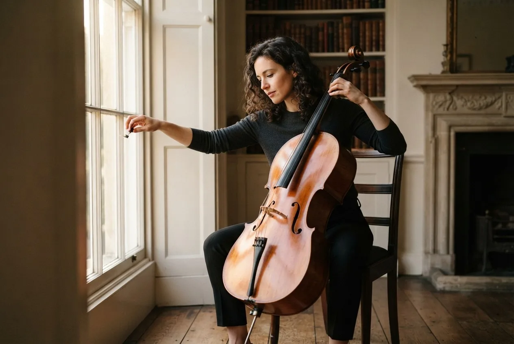

Nunți
Cum alegeți muzica pentru intrare
Intrarea durează cam nouăzeci de secunde. Iată cum alegeți piesa, momentul de start și ce faceți dacă culoarul e lung.

Violoncelistă · Bath, Anglia
Recitaluri solo, muzică de cameră și înregistrări, plus The Ashby Strings pentru nunți și evenimente private în tot sud-vestul Angliei.

Op. 01 — Salut
Maren Ashby este o violoncelistă britanică din Bath. Cântă ca solistă și în formații de cameră, înregistrează pentru Seren Records și conduce The Ashby Strings.
Mai multe despre mineOp. 02 — Ascultă

„Un sunet întunecat, cântat, și o răbdare rară față de tăcere.” — Gramophone
Op. 03 — Concerte
Recitaluri, muzică de cameră și concerte în acest sezon. Biletele se vând la fiecare sală.
St Swithin’s Church, Walcot · Bath
Wigmore Hall · London
Holburne Museum · Bath
Colston Hall · Bristol
Op. 04 — Nunți și evenimente
Violoncel solo, duo, trio sau cvartet de coarde. Fiecare pachet include o discuție de planificare și cel puțin o melodie aranjată special pentru voi.
Până la 1 oră
Până la 3 ore
Până la 5 ore
Op. 05 — Repertoriu
De la Bach la Coldplay, de la Debussy la Etta James. Căutați în listă, adăugați piese la selecție și ajung direct în cererea voastră.

Nimic găsit. Cereți melodia voastră, o aranjez.
Un sunet întunecat, cântat, și o răbdare rară față de tăcere.
Gramophone, despre Low Light
Autoritate liniștită și o voce care rămâne mult după ultima notă.
The Strad
Fără grabă, caldă și cu totul personală: Bach pentru dimineață.
BBC Music Magazine
Maren a învățat melodia noastră dintr-un mesaj vocal și a cântat-o când am intrat. Jumătate din biserică plângea, inclusiv preotul.
Lucy și Tom · Priston Mill
Cvartetul a trecut din capelă pe peluză fără să observe nimeni. Muzica nu s-a oprit și a fost potrivită pentru fiecare moment.
Aisha și Ben · Euridge Manor
Clară, amabilă și foarte organizată. Am avut o listă, un plan B pentru ploaie și un telefon cu o săptămână înainte. N-a trebuit să ne gândim deloc la muzică.
Hannah și Sam · The Pump Room, Bath
Op. 06 — The Ashby Strings
Când rezervați cvartetul, primiți aceiași patru oameni de fiecare dată. Fără înlocuitori trimiși în ultimul moment, fără necunoscuți care citesc muzica voastră prima dată.


Op. 07 — Jurnal

Intrarea durează cam nouăzeci de secunde. Iată cum alegeți piesa, momentul de start și ce faceți dacă culoarul e lung.
Patruzeci de minute, în aceeași ordine: coarde libere, game în terțe, o parte din Bach, apoi ce mă sperie cel mai tare.

Instrumentele și ploaia nu se împacă. Iată ce ne trebuie la o ceremonie în aer liber și cum trecem la planul B fără agitație.
Op. 08 — Întrebări
Ce întreabă cel mai des cuplurile. Pentru orice altceva, scrieți-mi.
Pune o întrebareSâmbetele de vară se ocupă primele, deci șase până la nouă luni înainte e sigur. Pentru o zi din săptămână sau o dată de toamnă, trei luni sunt de obicei suficiente. Scrieți chiar dacă data e aproape.
Da. Trimiteți titlul sau un mesaj vocal. O aranjez pentru formație și o cânt la discuția dinaintea zilei, ca s-o auziți prima dată acolo.
Un loc drept de vreo trei metri lățime, umbră sau acoperiș în aer liber și o priză pentru sonorizare. Restul îl stabilesc direct cu locația.
Da, oriunde în Marea Britanie. Drumul și o noapte de hotel se adaugă la ofertă când locația e la peste două ore de Bath.
Un avans de 30% rezervă data, restul se plătește cu două săptămâni înainte. Transfer bancar, cu factură la fiecare plată.
Mutăm înăuntru sau sub acoperiș și stabilim planul B la discuția de planificare. Muzica nu se oprește, iar onorariul nu se schimbă.

Trimiteți o dată și o locație. Răspund în două zile cu disponibilitatea, o ofertă și câteva idei pentru muzică.